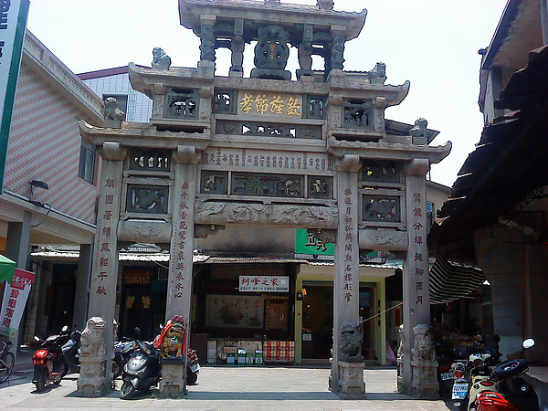

貞節牌坊

介紹
邱良功母節孝坊立於清朝嘉慶1 7 年（1812），位於金城莒光路靈濟古寺旁；為當時仁宗皇帝為表揚浙江水師提督邱良功的母親許氏（明印官諱貞淑）堅貞守節28年，
撫育其良功成為國家棟樑，可為鄉梓的楷模。目前是台閩地區規模最大、裝飾最精緻的牌坊，是國定古蹟唯一以牌樓入選，有「台閩第一坊」的美稱。
邱良功的母親許氏，為清朝振威將軍邱志仁之妻；邱良功出生35天，父親邱志仁就與世長辭，當時許氏還不到30歲，含辛茹苦的把剛滿月的邱良功撫養長大，
並入朝為官。嘉慶13年（1808），邱良功任浙江提督平蔡牽亂，有功於國家，清仁宗旌表其母許氏，誥贈邱母一品夫人，並建坊表彰其守節撫孤教子之功。
邱良功母節孝坊是一座四柱三間式之石作牌樓，以高級的泉州花崗白石與墨綠青斗石建造而成，高度超過10公尺。坊頂有「聖旨」石匾，石匾下橫刻「欽旌節孝」四字；
牌坊的龍柱、雲紋等雄偉樸實的雕刻，裝飾種類繁多，包含動物、植物、器物、吉祥圖案，以及象徵邱良功功成名就後返家的精彩情節雕刻，皆是出自內陸名師的巧手。
柱面上有名人題刻聯對，其中一聯為清代台灣人任福建水師提督的王得祿所撰，兩側立著四對石獅，勇猛威武，恆久守護著佇立於金城鎮街巷的牌坊。
相關影片
地圖